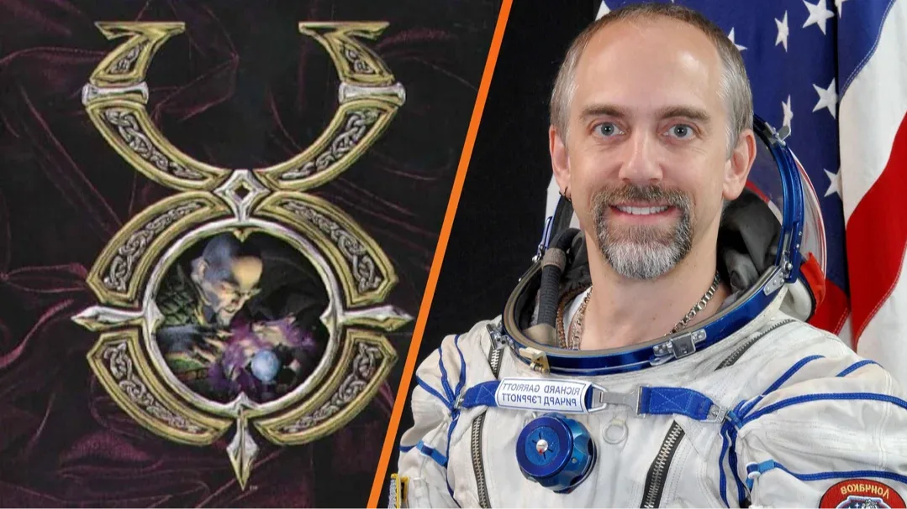
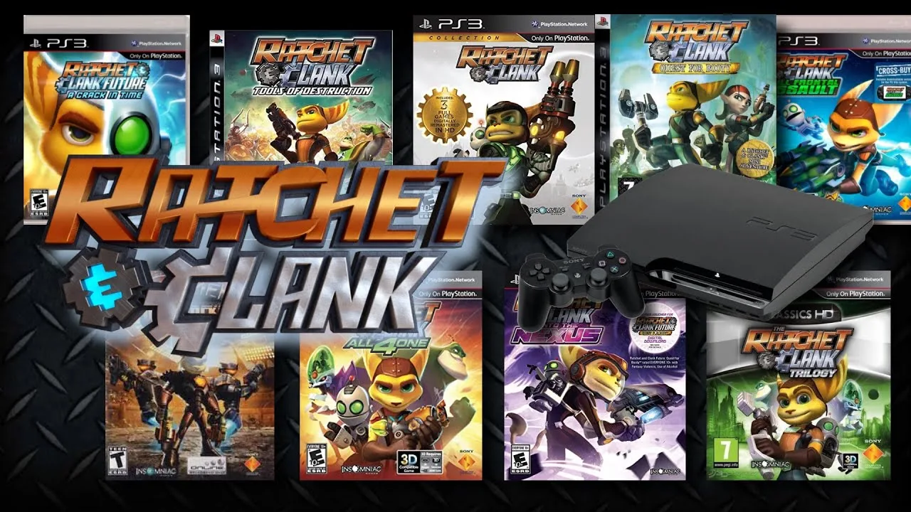
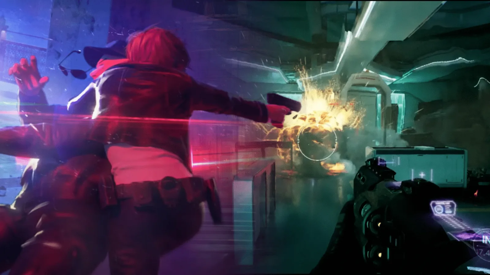
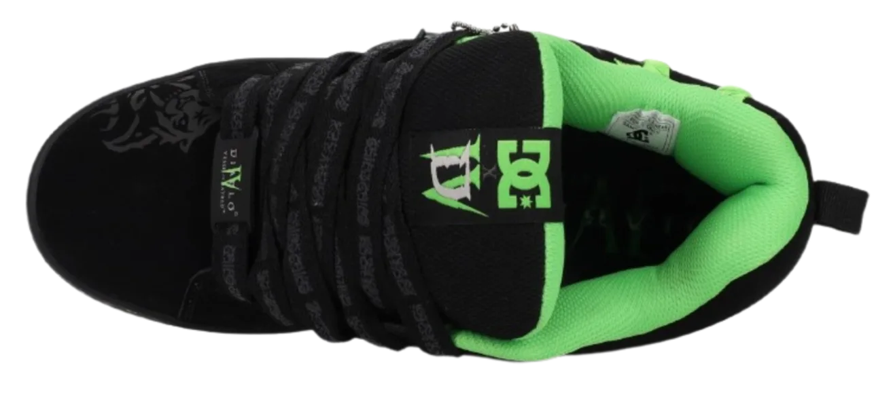

8 de octubre de 2026
8 de octubre de 2026
El guionista de Resident Evil Requiem adelanta que el próximo DLC profundizará en la historia de Spencer
El próximo contenido argumental de Resident Evil Requiem todavía permanece bajo secreto, pero una declaración de su guionista dejó escapar un detalle importante. Haris Orkin confirmó que la expansión continuará explorando la historia de Oswell E. Spencer, uno de los personajes fundamentales de la mitología de Resident Evil.
 8 de octubre de 2026
8 de octubre de 2026
Silent Hill: Townfall recibe un parche que reduce la dificultad de sus secciones más frustrantes
Konami lanzó una nueva actualización para Silent Hill: Townfall que modifica especialmente los encuentros contra The Weight, uno de los puntos más criticados del juego. El parche también reduce la agresividad de otros enemigos, facilita algunos aspectos del combate y agrega información para resolver uno de los rompecabezas finales.

8 de octubre de 2026Richard Garriott recuperará los derechos de Ultima de manos de Electronic Arts en 2027
Más de tres décadas después de vender Origin Systems a Electronic Arts, Richard Garriott está a punto de recuperar el control sobre los derechos de Ultima. El creador ya notificó a EA que ejercerá un mecanismo previsto por la legislación estadounidense y asegura que las conversaciones entre ambas partes continúan.
8 de octubre de 2026Ape Escape podría regresar de la mano del equipo de Sonic Mania
La clásica franquicia de PlayStation podría estar preparando su regreso después de más de una década sin una nueva entrega. Según distintas fuentes, Evening Star, el estudio detrás de Sonic Mania y Penny’s Big Breakaway, estaría trabajando en un nuevo proyecto de Ape Escape, aunque Sony todavía no realizó ningún anuncio oficial.
8 de octubre de 2026Paramount y Warner Bros. Games fusionan sus divisiones de videojuegos bajo Skydance
La fusión entre Paramount y Warner Bros. Discovery ya es oficial y también afecta directamente al negocio de los videojuegos. Warner Bros. Games y Paramount Games Studio quedaron integrados bajo la nueva estructura de Skydance, reuniendo franquicias como Mortal Kombat, Hogwarts Legacy, Batman, SpongeBob y TMNT.
 8 de octubre de 2026
8 de octubre de 2026
Un olvidado clásico de PC-98 vuelve más de 30 años después: Dead of the Brain llegará a Steam en inglés
Dead of the Brain, el peculiar juego de horror y zombis lanzado originalmente para PC-98 en 1992, prepara su regreso a plataformas modernas. La reedición estará publicada por FAKKU y contará por primera vez con soporte oficial en inglés, permitiendo descubrir fuera de Japón uno de los títulos de culto más extraños de aquella generación.

7 de octubre de 2026RPCS3 consigue que los seis Ratchet & Clank de PS3 funcionen sin los crashes históricos
Una importante corrección técnica de RPCS3 eliminó los congelamientos y cierres que durante años afectaron a los seis juegos de Ratchet & Clank publicados en PlayStation 3. La mejora no significa compatibilidad perfecta ni rendimiento óptimo, pero representa un avance importante para preservar la saga en PC.

7 de octubre de 2026El Perfect Dark cancelado muestra más de dos minutos de gameplay inédito
Más de dos minutos de material de desarrollo del Perfect Dark que Microsoft canceló en 2025 aparecieron en Internet. Las imágenes muestran combate, exploración, armas, una secuencia de escape y sistemas de hacking, ofreciendo uno de los vistazos más completos al proyecto que The Initiative desarrolló durante años.

7 de octubre de 2026Diablo IV y DC Shoes lanzan unas zapatillas limitadas a 666 unidades
Blizzard Entertainment y DC Shoes se unieron para crear una edición especial de las clásicas COURT GRAFFIK, inspirada en el universo de Diablo IV. El modelo COURT GRAFFIK DIABLO está limitado a solo 666 pares en todo el mundo, con 50 unidades destinadas al mercado japonés.